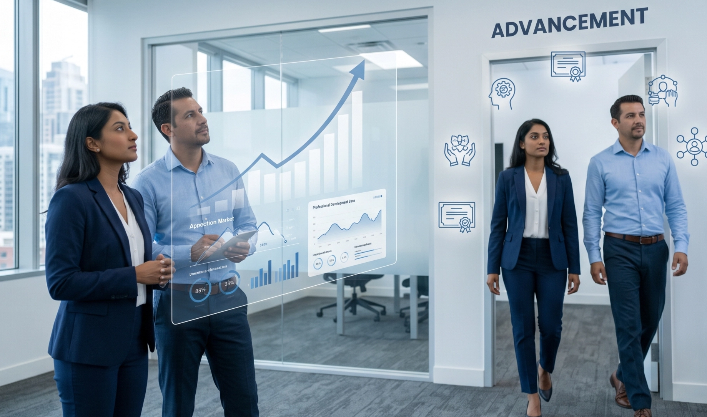

IA & Recherche d'emploi
Utiliser l'IA pour trouver, analyser et cibler les meilleures offres.
Voir le programmeNous accompagnons les demandeurs d'emploi, jeunes, salariés en transition et autres publics dans l'évolution de leurs compétences et la maîtrise des nouveaux usages du recrutement et de la recherche d'emploi.
Utilisez les bons outils, avec méthode et discernement.
Nous travaillons avec les acteurs de l'emploi, de l'insertion et de la formation.
Nous pouvons agir ensemble pour :Présentiel, distanciel ou mixte : nous nous adaptons à vos contraintes de temps, de mobilité et d'éloignement géographique.
Nos formations les plus demandées
Utiliser l'IA pour trouver, analyser et cibler les meilleures offres.
Voir le programme
Créer un CV impactant et une lettre qui retient l'attention.
Voir le programmeOptimiser votre candidature pour passer les filtres et être sélectionné.
Voir le programme
Des solutions existent selon votre situation.
Nous pouvons vous orienter vers le bon parcours, la bonne formation ou le bon dispositif.
Échangeons sur les besoins de vos publics.